A written walkthrough of Thingfishy’s “The Smart
Way To Start EVERY Build” (YouTube,
lxfZdm6PO0I). It’s a pre-boss “setup” route: before you
fight anything or commit to a build, you ride a lap of the map picking
up nearly every free Golden Seed, Sacred Tear, and early Smithing/Somber
Smithing Stone, then cash in two soft, low-risk kills for a huge rune
payout. Do this once on a fresh character and every subsequent build
starts most of the way to fully upgraded.
Timestamped links point back to the source clip. If a step reads unclear, the video is the tiebreaker.
Somber Smithing Stone [7] is deliberately skipped. It normally requires areas far beyond what’s reasonable to reach this early. The route does pick up a couple of [8]s and [9]s anyway since they happen to sit right on the path; they just won’t let you upgrade past +6 until you backfill [7] later.
0:00)17:16)20:17)If you’re building around a Somber weapon, you can skip Chapter 2 entirely and jump straight to Chapter 3.
0:00 · watch
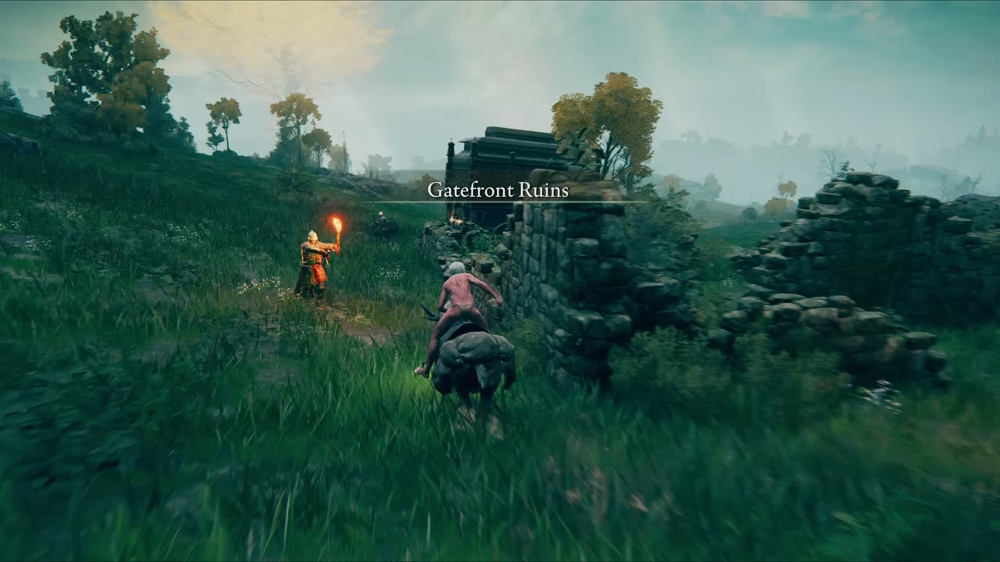
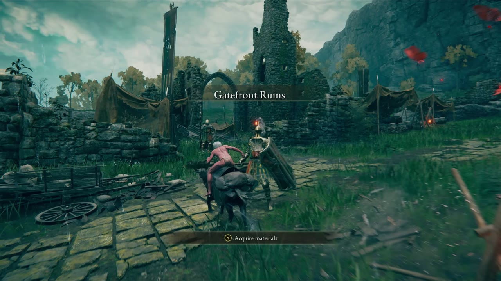
Ride the main road all the way south to Weeping Peninsula, picking up on the way:
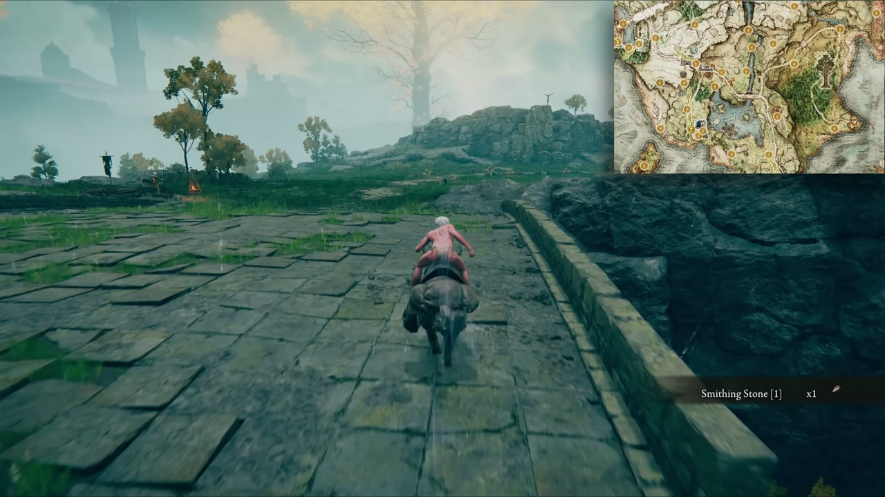
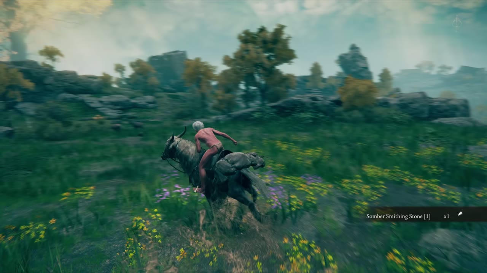
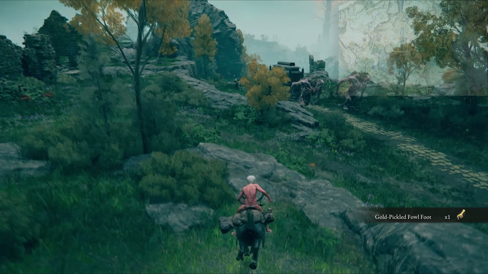
Continuing south, the next bridge has more Smithing Stones and a Stonesword Key. In the valley just after, loot the Morning Star from the carriage on the left, plus another Smithing Stone.
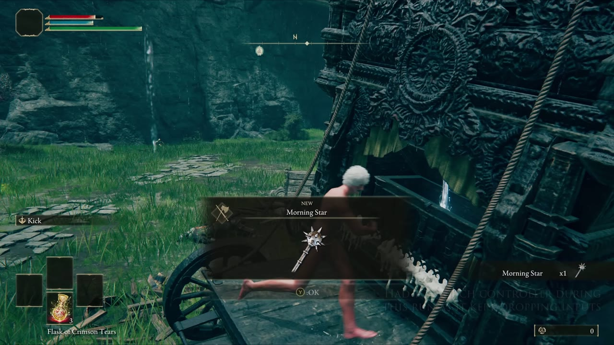
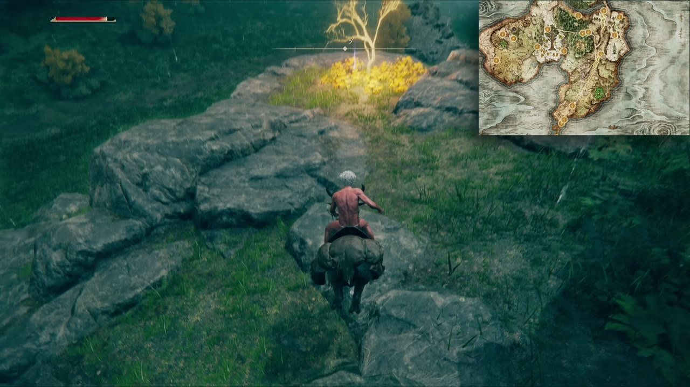
Quit out, return to Castle Morne Rampart Grace, then head up the hill and around to the right for Callu Baptismal Church, your first Sacred Tear.
Fast travel to Castle Morne Rampart, then ride northwest hugging the cliffs on your left, across the bridge, to the Church of Pilgrimage for a second Sacred Tear, plus the Bleed Grease from the graveyard just outside.
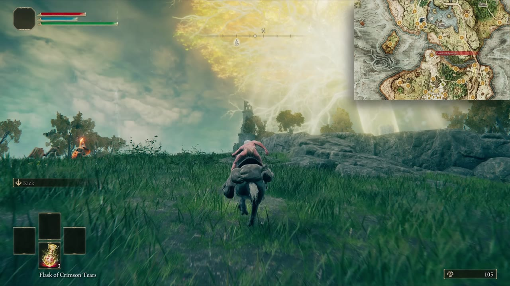
Sacred Tear pickup at the Church of Pilgrimage
Ride southwest to the Fourth Church of Marika for a third Sacred Tear.
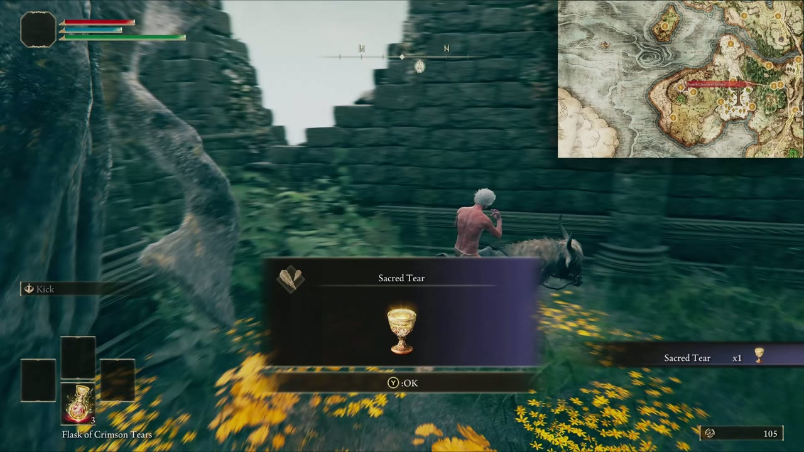
Sacred Tear pickup at the Fourth Church of Marika
Fast travel to the Limgrave gatefront and ride up the hill, grabbing a Golden Seed and lighting Warmaster’s Shack Grace. (This route also stashes a spare Stonesword Key here to save a later trip.)
From Warmaster’s Shack, head northeast between the cliffs and ruins for the Strength-knot Crystal Tear.
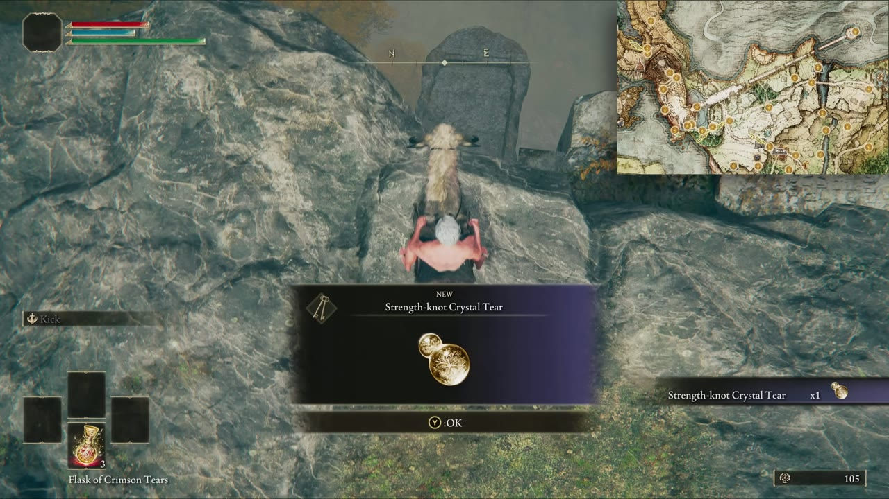
Strength-knot Crystal Tear pickup
Jump down the rocks and keep going northeast.
The rest of this route can be done without fighting anything, but it’s worth pausing here: take down the mounted knight overlooking the mob camp (northeast of Warmaster’s Shack, between the ruined structure and the cliff edge) for the Golden Vow Ash of War, a strong buff for almost any build.
Drop into the nearby camp for a Golden Rune and the Exalted Flesh.
Take the road out of camp to Saints Bridge, grabbing Smithing Stones as you cross.
Ride past the wandering merchant, southeast to the ruins bordering the Mistwood. Loot the graves for the Nomadic Warrior’s Cookbook [1] (you’ll use it to craft Sleep Pots for the rune farm in Chapter 3) and pick up two Golden Runes.
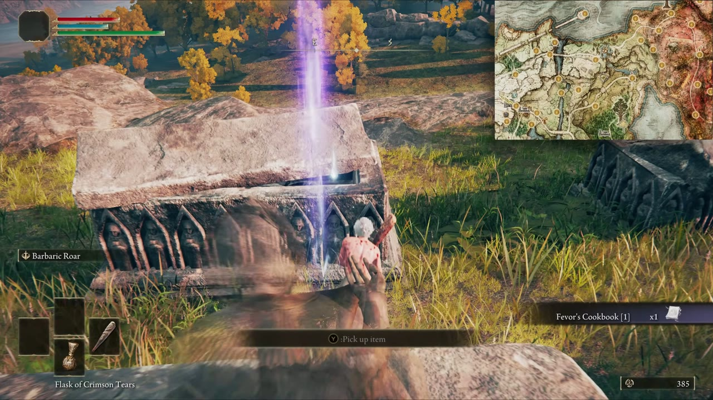
Nomadic Warrior’s Cookbook pickup
Drop down the cliff to the Third Church of Marika (northeastern Limgrave, right on the Caelid border) for the Wondrous Physic and another Sacred Tear. A hidden Sending Gate in the bushes behind the church warps straight to the Bestial Sanctum in Dragonbarrow. You’ll use it two steps from now.
Ride south through the Mistwood to Fort Haight (southeast corner of Limgrave). Grab the Golden Seed out front.
Climb the ladder to the top for the Dectus Medallion (Left).
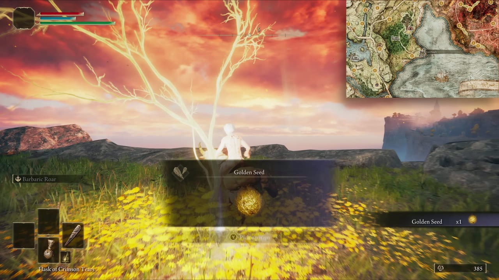
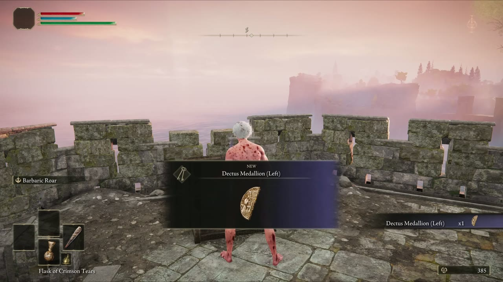
Quit out for safety, walk back to the Third Church of Marika, and use the hidden Sending Gate to warp to the Bestial Sanctum in Dragonbarrow.
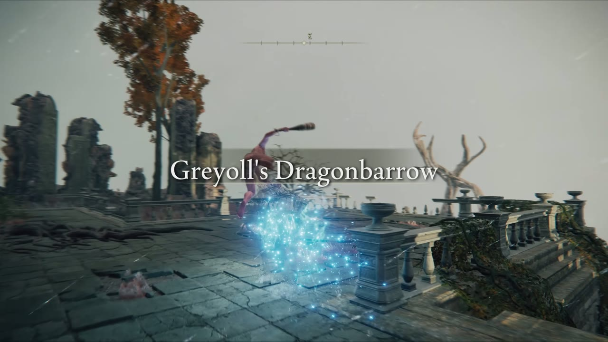
Loading into Greyoll’s Dragonbarrow via the hidden Sending Gate
Ride south from the Bestial Sanctum, grabbing a Golden Seed on the way, then follow the shown route down through the branches and across the bridge to light Lenne’s Rise Grace.
Climb the spirit spring behind it and loot the graveyard for three Golden Runes.
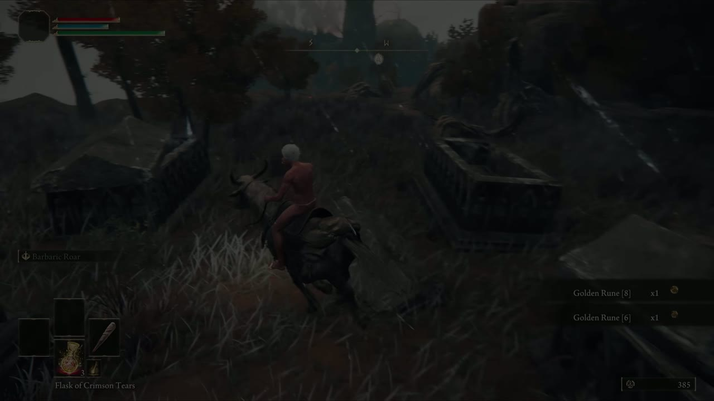
Golden Runes looted from the graveyard near Lenne’s Rise
Head southwest past the minor Erdtree, up another spirit spring, and light the Grace outside Fort Faroth on the eastern Dragonbarrow cliffs. The dragon Tarn Farosh is known to patrol this stretch, so stay alert.
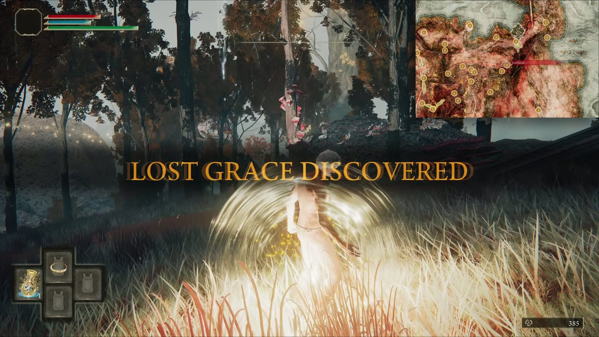
Grace discovered outside Fort Faroth
Climb the fort’s ladder for the Dectus Medallion (Right), jump down the second hole for Golden Rune [12] by the rats, then jump across and down for Radagon’s Soreseal.
Quit out, return to the Grace outside, jump the smoldering wall, and take the nearby spirit spring down to the Church of Plague for another Sacred Tear.
Walk back to Fort Faroth, skirt around the large dragon, and head west toward the Divine Tower of Caelid.
Down the road to the right: Somber Smithing Stone [9].
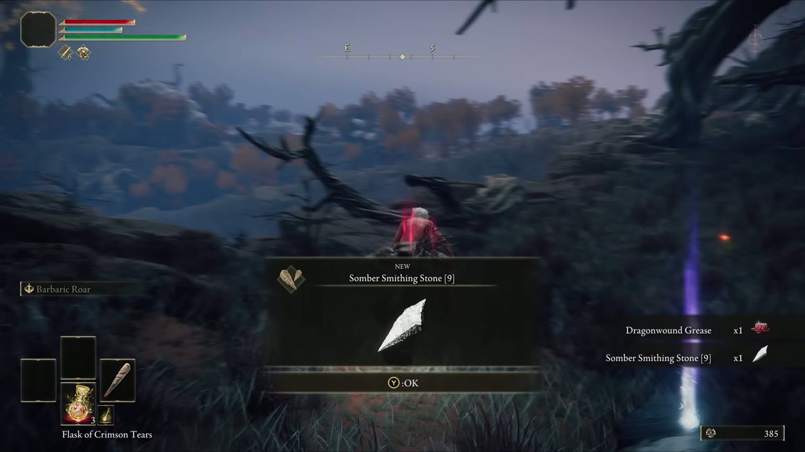
Somber Smithing Stone [9] pickup near the Divine Tower
Double back and climb to the tower’s upper platform. A Teardrop Scarab sits here: rather than fighting it, kick it off the cliff for a Somber Smithing Stone [8] and stay clear of its death explosion.
Return to Stormhill (Limgrave) and head north to the broken bridge. Drop down and follow the cliffs into Liurnia of the Lakes, lighting the Grace by the lake facing the cliffs.
Grab a Sacred Tear from the nearby lakeside church.
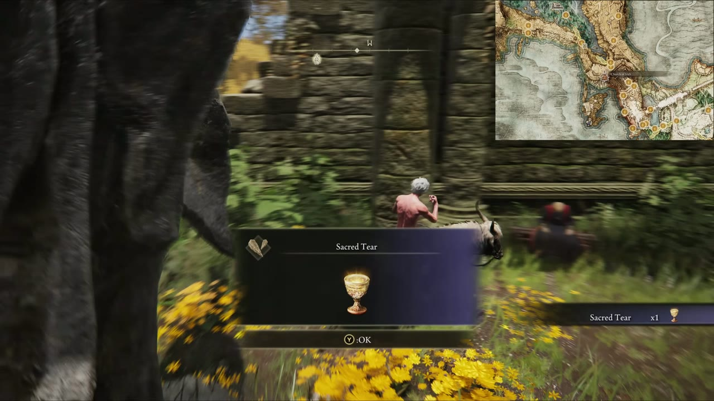
Sacred Tear pickup at the Liurnia lakeside church
Head out the west side, ride down past the camp, and at the wandering merchant pop a Golden Rune [6] and buy out all his available Smithing Stones.
From the merchant, follow the main path to the ruins by the Academy causeway, and grab the Smithing Stones next to the teleporter gazebo before using it.
Light the South Raya Lucaria Gate Grace.
Double-jump off the bridge onto the rock below for a couple more Smithing Stones. Skip this if you’re going pure Somber; it’s a slight detour for stones you won’t need.
Hug the cliffs to your right until the dragon comes into view, then grab the Academy Glintstone Key without aggroing it. Open your map and walk back to the Grace, then head into the Academy.
Light the Academy courtyard Grace, then cross toward the bridge for another Golden Seed before entering Raya Lucaria proper.
On arrival, equip the Carian Knight set for safety, then follow the shown jump off the platform exactly to minimize fall damage (spam roll on landing if you catch a bad one; it’s survivable).
New to this route? Level your flasks as you go in case you need heals here.
Jump onto the building ahead and loop around it for two more Smithing Stones. It’s faster and safer than dropping straight into the lava.
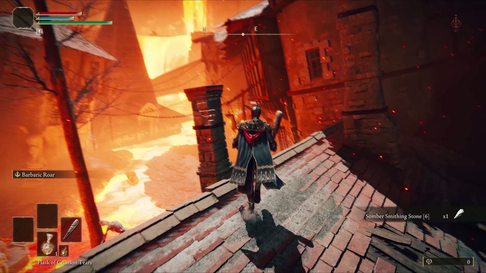
Smithing Stones picked up on the Volcano Manor rooftop
Cross the lava, loop around the next building, for Somber Smithing Stone [6], then down and up the stairs.
If the fire-breathing serpent is near the lift, quit out to reset its position. Off the lift, head right for Somber Smithing Stone [5].
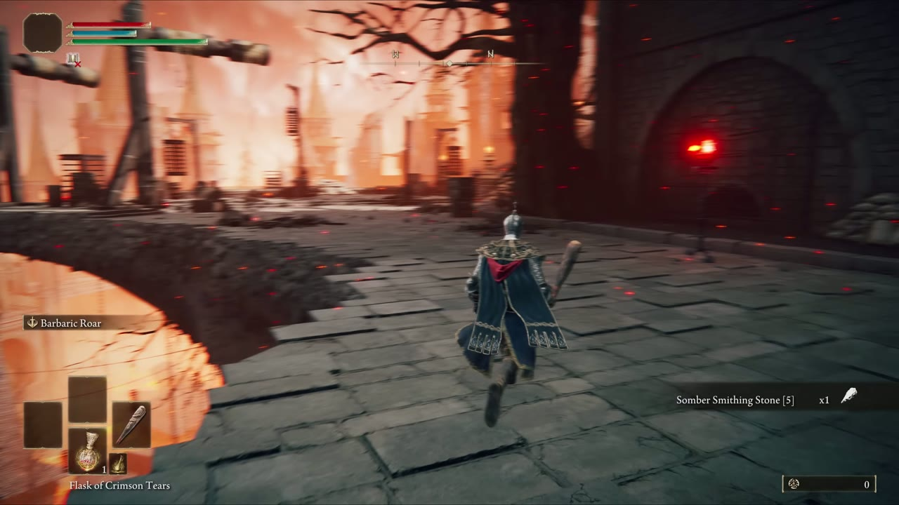
Somber Smithing Stone [5] pickup near the lift
Up the stairs to open a shortcut for later, then let the nearby monk kill you, the fastest way back to the start of this section.
On respawn, run left across the lava pools to a linear ~90-second cave path leading to a Grace. Resting here means you’re no longer trapped in the area.
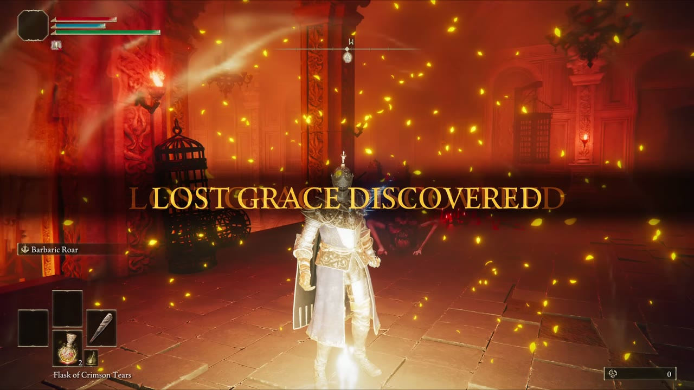
Grace discovered: no longer trapped in the lava cave
Fast travel back to Liurnia and enter the Academy Crystal Cave via the lake ruins: open the door, then the chest, hopping on top of the chest right after opening it for extra safety.
This cave is the most dangerous part of the whole route. Take it slow.
Out of the spawn room: two Smithing Stones on the rocks, one more behind the nearby shack.
Speedrunner tip: jump-block, jump-block on the uphill sections; it’s the fastest way to move here.
A quick quit-out here staggers the Servants of Rot guarding the path, giving you a real shot at the next Smithing Stone [5]. This section is RNG-dependent: anywhere from 2 to 20 minutes depending on luck.
Jump over the rooftop into the rest of the cave for another Smithing Stone [5], across the beam for two more, then quit out again.
On reload, head to the ladder and up it for Somber Smithing Stone [4], then into the final room for one more Smithing Stone [5].
Rest at the Grace and head back to the Academy Gate Grace.
Skipping this cave: buy Somber Smithing Stone [4] from the Twin Maiden Husks at the Roundtable Hold instead. The video usually eats that cost rather than risk the cave.
Through the teleporting sign, light the East Raya Lucaria Gate Grace.
Follow the shown route down the spirit spring for a Somber Smithing Stone [3] from a seated NPC, then walk back and on to Bellum Church for the last Sacred Tear of this chapter.
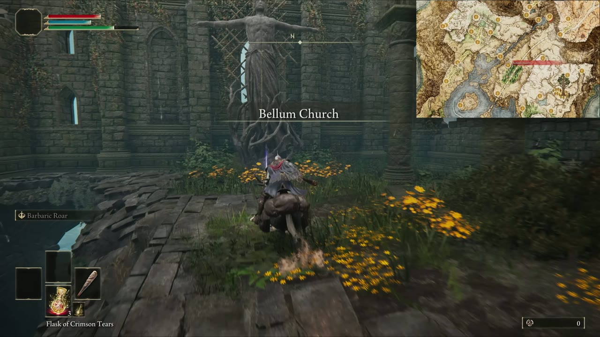
Sacred Tear pickup at Bellum Church
Somber weapon users are done here: skip straight to Chapter 3.
17:16 · watch
Ride the Divine Tower lift up to Altus Plateau and head for the capital. Up the stairs: two Golden Seeds at the bottom, then light the Grace and continue up for two more.
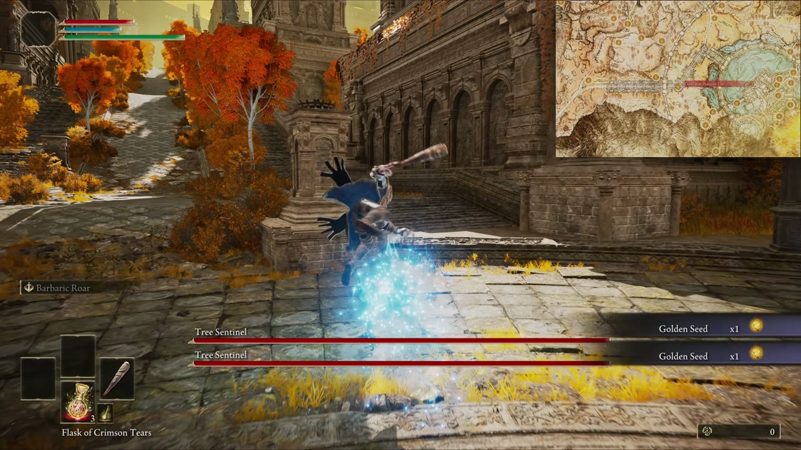
Golden Seed pickup approaching Leyndell, with the Tree Sentinel visible
Fast travel back to the bottom, then ride east toward the Sealed Tunnel.
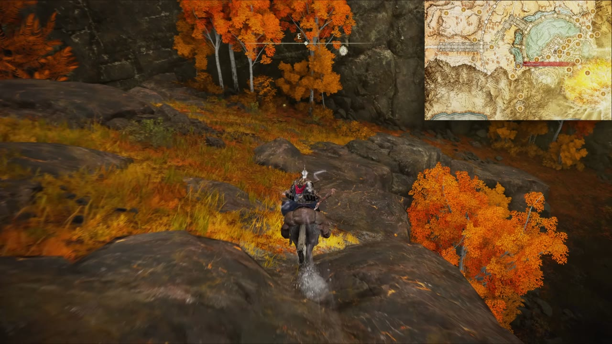
Loading into the Altus Plateau near the Sealed Tunnel
Light the Grace, go through the hidden wall, and follow the shown route through successive rooms for a Smithing Stone [5] and the Smithing-Stone Miner’s Bell Bearing [1].
Continue: off the back of the lift for a cheeky Smithing Stone [5], across the roots for another in the next room, then for the final one jump onto the ledge and drop to the bottom for Golden Rune [9]. Let the nearby enemies handle your exit.
Respawn at the Grace (not the Stake of Marika) and head back out to the South Raya Lucaria Gate.
Ride toward the courtyard, grabbing a Smithing Stone [3] on the way, drop down by the crab for another, and round the corner for the final Golden Seed.
Head southeast to Gate Town Grace, then ride southwest across the lake to the Boilprawn Shack.
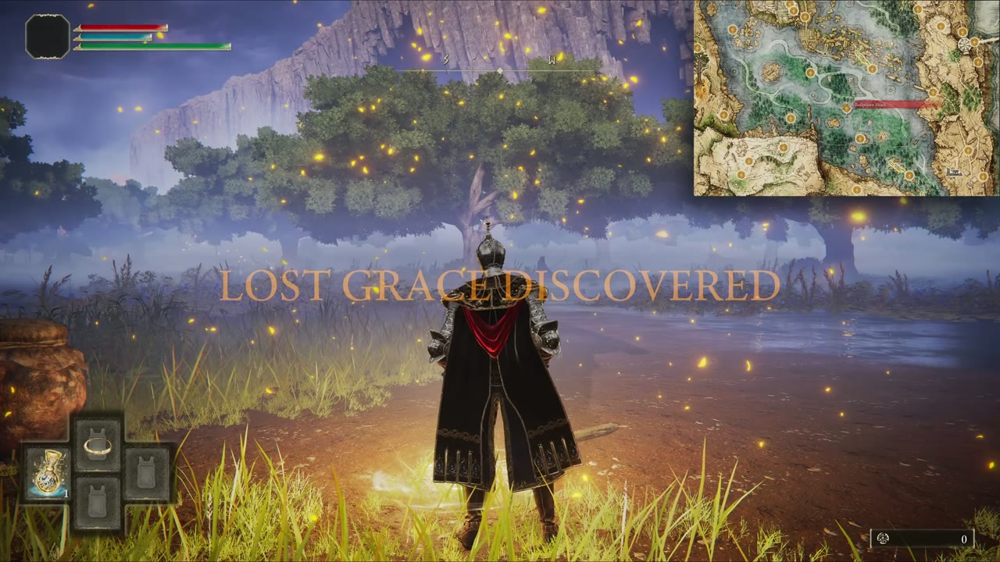
Grace discovered on the shore near the Boilprawn Shack
A little further on, grab the Dexterity-knot Crystal Tear.
Head northwest for more Smithing Stones, quitting out when you drop past the lobsters, then fast travel back to Gate Town Grace for the final stones: ride toward the distinctive rock formation in the distance for stones by the flowers, then northeast to the poison gazebo for the last ones.
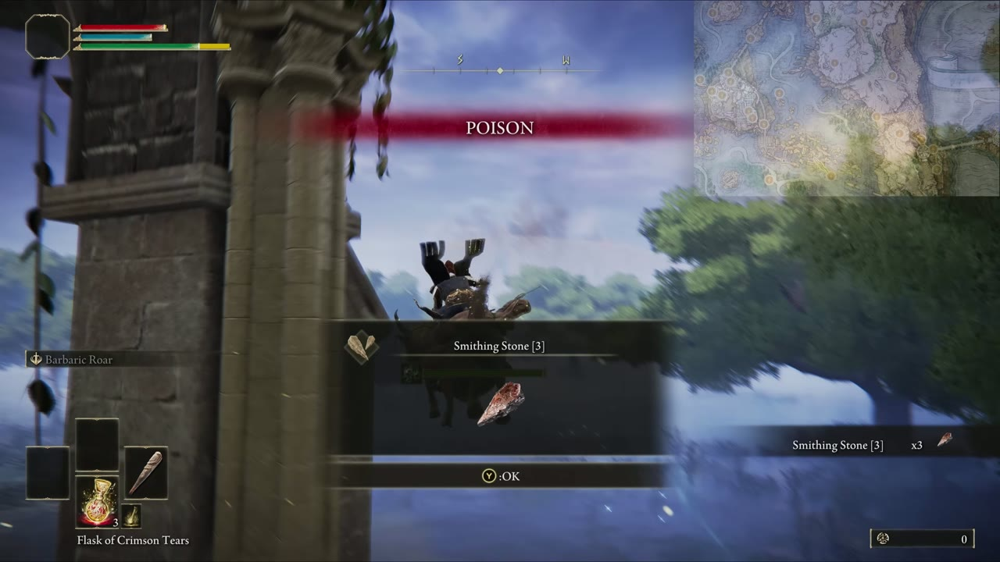
Final Smithing Stone pickup at the poison gazebo
Travel to the Roundtable Hold and spend every rune you have on the four remaining Smithing Stone [3]s and all twelve Smithing Stone [4]s from the Twin Maiden Husks.
20:17 · watch
Two low-risk kills, no real fights, for the bulk of your ~140-150k runes.
The second target is the Elder Dragon Greyoll, a mostly-passive giant dragon on the Dragonbarrow cliffs near Fort Faroth worth a massive rune payout: tens of thousands of runes for what amounts to a Bleed-tick war of attrition, not a real fight.
That’s the full setup: a +7 flask with 9 charges, full Smithing Stone stock to +16, Somber stock to +6, and enough runes for roughly level 40. All without a single boss fight.
A rundown of what this route collects, grouped by category, so you can track progress or spot-check yourself against the video. Counts reflect what’s called out in the narration.
| Category | Collected on this route |
|---|---|
| Golden Seeds | ~10, across Castle Morne, Warmaster’s Shack, Fort Haight, Dragonbarrow (Bestial Sanctum route), the Academy bridge, and the Altus Plateau capital stairs (×4) and courtyard corner |
| Sacred Tears | 7, at Callu Baptismal Church, Church of Pilgrimage, Fourth Church of Marika, Third Church of Marika, Church of Plague, the Liurnia lakeside church, and Bellum Church |
| Somber Smithing Stones | [1] Weeping Peninsula bridge · [2] Castle Morne beach · [3] Liurnia spirit spring (East Gate) · [4] Academy Crystal Cave · [5] Volcano Manor lift · [6] Volcano Manor rooftop · [8] Divine Tower of Caelid (scarab kick) · [9] Divine Tower of Caelid road ([7] deliberately skipped) |
| Standard Smithing Stones | Dozens, picked up continuously through both chapters plus bulk-bought from the Liurnia merchant and the Twin Maiden Husks (enough for +16) |
| Key items | Torrent, Stonesword Keys (×2+), Academy Glintstone Key, both halves of the Dectus Medallion, Smithing-Stone Miner’s Bell Bearing [1] |
| Notable consumables/talismans | Flask of Wondrous Physic, Whetstone Knife, Gold-Pickled Fowl Foot, Morning Star, Strength-knot & Dexterity-knot Crystal Tears, Bleed Grease, Nomadic Warrior’s Cookbook [1], Exalted Flesh, Radagon’s Soreseal, Carian Knight Armor |
| Golden Runes | Several, of varying denominations, used along the way to buy out merchant Smithing Stone stock |
| Bosses/major enemies fought | None: Night’s Cavalry and Elder Dragon Greyoll are both cheesed with minimal real combat |